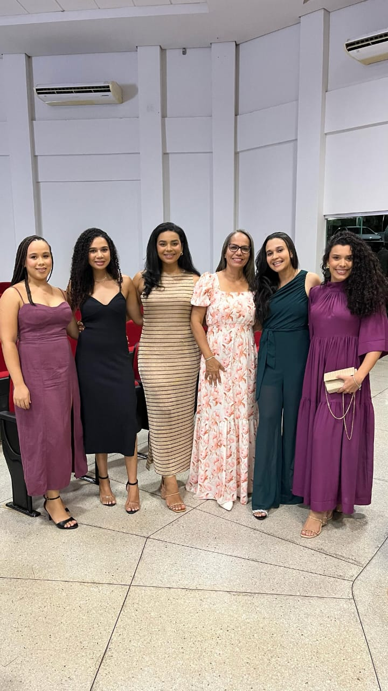
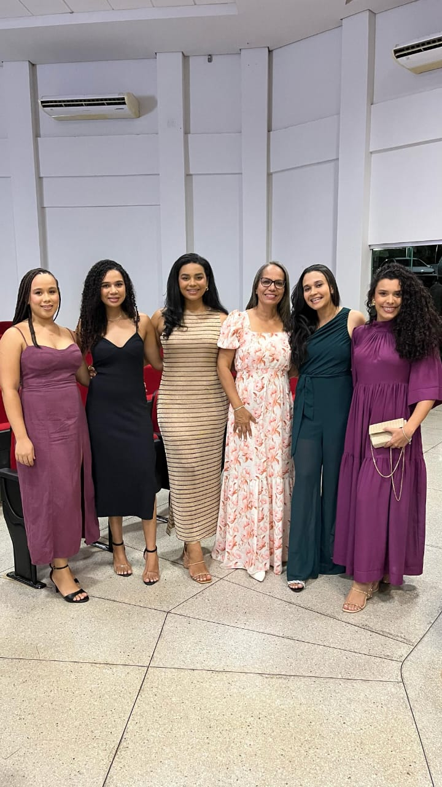

Jhennyf
Jhennyf é aquele tipo de pessoa que ilumina tudo ao redor
Um coração gigante, sempre cheia de ideias criativas
E com uma risada que arranca a nossa mesmo nos dias mais difíceis
Nossa amizade vem de longe — crescemos juntas, rimos, choramos, vivemos fases e fases…
E mesmo com o tempo passando, ela continua sendo esse presente que a vida me deu
Com a Jhennyf, não tem tempo ruim. É zoeira garantida, conselhos
e um carinho que transborda. Uma amiga que é abrigo e alegria ao mesmo tempo
Momentos com Jhennyf üì∏


 
